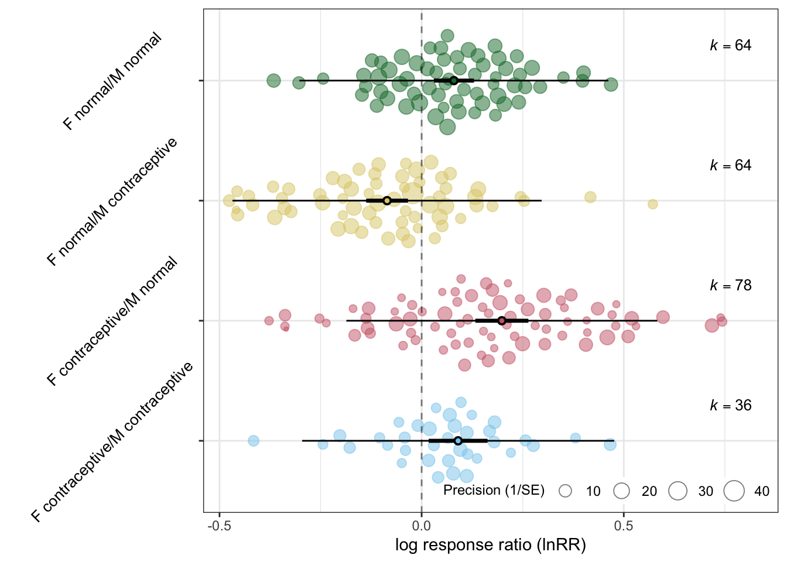
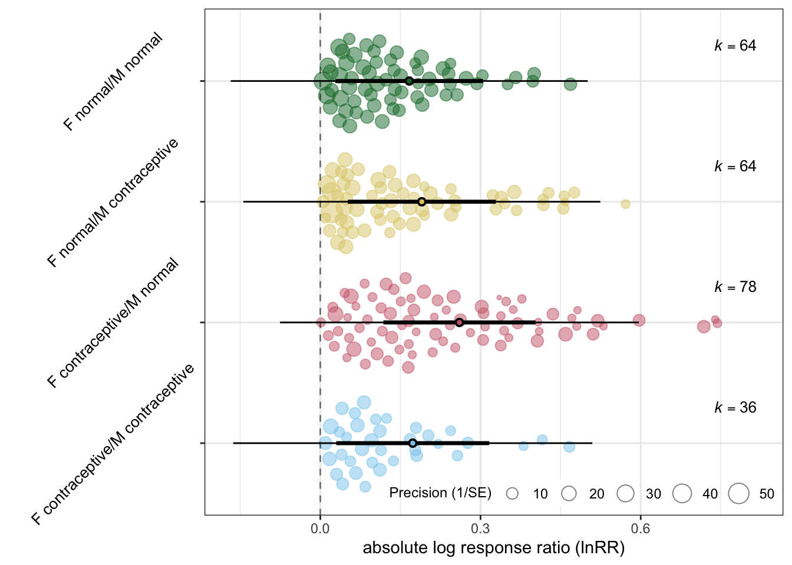

Michael Garratt, Malgorzata Lagisz, Johanna Stärk, Christine Neyt, Michael Stout, José V. V. Isola, Veronica Cowl, Nannette Driver-Ruiz, Ashley D. Franklin, Monica M. McDonald, Katelyn Mucha, David Powell, Rachel Thompson, Susan L. Walker, Jean-Michel Gaillard, Dalia A. Conde, Jean-François Lemaître, Fernando Colchero and Shinichi Nakagawa
# main datadat0 <-read_csv(here("data", "zoo", "zoo.csv"), na =c("", "NA"))# phylogenytree <-read.tree(here("data", "zoo", "tree_zoo.tre"))# taxonomytax <-read.csv(here("data", "zoo", "vertlife_taxonomy_translation_table.csv"))dat0 %>%left_join(tax, by =c("species"="zims.species")) -> dat_full# talking out species with no data (Pseudocheirus peregrinus = likely to be mistaks in data)dat_full %>%filter(species !="Chrysocyon brachyurus"& species !="Crocuta crocuta"& species !="Neofelis nebulosa"& species !="Panthera uncia"& species !="Pseudocheirus peregrinus") %>%mutate(phylogeny =gsub(" ", "_", vertlife.species)) -> dat# adding Cervus canadensisdat$vertlife.species[which(dat$species =="Cervus canadensis")] <-"Cervus canadensis"dat$phylogeny[which(dat$species =="Cervus canadensis")] <-"Cervus_canadensis"# fixing species namedat$species[dat$species =="Equus asinus"] <-"Equus_africanus"dat$species[dat$species =="Aonyx cinereus"] <-"Aonyx cinerea"dat$species[dat$species =="Bubalus bubalis"] <-"Bubalus arnee"# life span data to_drop <- tree$tip.label[which(!(tree$tip.label %in%unique(dat$phylogeny)))]tree <-drop.tip(tree, to_drop)# checking the number of spp#length(tree$tip.label)tree <-as.ultrametric(tree)#tree <- compute.brlen(tree)cor_tree <-vcv(tree, corr =TRUE)# length(unique(dat$species))# length(unique(dat$phylogeny))# # match(unique(gsub(" ","_", dat$species)), unique(dat$phylogeny))# match(unique(dat$phylogeny), unique(gsub(" ","_", dat$species)))#write_csv(dat, here("data", "zoo", "original.csv"))# pre- and post-2005 data for sensitivity analysisdat_pre <-read.csv(here("data", "zoo", "hormTabPre05.csv"))dat_post <-read.csv(here("data", "zoo","hormTabPost05.csv"))dat_pre %>%left_join(tax, by =c("species"="zims.species")) -> dat_predat_post %>%left_join(tax, by =c("species"="zims.species")) -> dat_postdat_pre %>%transmute(F_normal_m = LifeExpNocontMean,F_normal_sd =sqrt(Nnocon)*LifeExpNocontSE,F_normal_n = Nnocon,F_hormonal_m = LifeExpHormMean,F_hormonal_sd =sqrt(Nhorm)*LifeExpHormSE,F_hormonal_n = Nhorm,species = species,#species_tree = vertlife.species,phylogeny =gsub(" ", "_", vertlife.species) ) -> dat_predat_post %>%transmute(F_normal_m = LifeExpNocontMean,F_normal_sd =sqrt(Nnocon)*LifeExpNocontSE,F_normal_n = Nnocon,F_hormonal_m = LifeExpHormMean,F_hormonal_sd =sqrt(Nhorm)*LifeExpHormSE,F_hormonal_n = Nhorm,species = species,#species_tree = vertlife.species,phylogeny =gsub(" ", "_", vertlife.species)) -> dat_post
1.3 Custom functions
We have 7 custom functions named : cont_gen(),get_pred1(), get_pred2(), mr_results(), all_models(),folded_mu, and folded_v, all of which are used later and the code is included here.
Code
# custom functions#' Title: Contrast name generator#'#' @param name: a vector of character stringscont_gen <-function(name) { combination <-combn(name, 2) name_dat <-t(combination) names <-paste(name_dat[, 1], name_dat[, 2], sep ="-")return(names)}#' @title get_pred1: intercept-less model#' @description Function to get CIs (confidence intervals) and PIs (prediction intervals) from rma objects (metafor)#' @param model: rma.mv object #' @param mod: the name of a moderator get_pred1 <-function (model, mod =" ") { name <-firstup(as.character(stringr::str_replace(row.names(model$beta), mod, ""))) len <-length(name)if (len !=1) { newdata <-diag(len) pred <- metafor::predict.rma(model, newmods = newdata,tau2.levels =1:len) }else { pred <- metafor::predict.rma(model) } estimate <- pred$pred lowerCL <- pred$ci.lb upperCL <- pred$ci.ub lowerPR <- pred$cr.lb upperPR <- pred$cr.ub table <-tibble(name =factor(name, levels = name, labels = name), estimate = estimate,lowerCL = lowerCL, upperCL = upperCL,pval = model$pval,lowerPR = lowerPR, upperPR = upperPR)}#' @title get_pred2: normal model#' @description Function to get CIs (confidence intervals) and PIs (prediction intervals) from rma objects (metafor)#' @param model: rma.mv object #' @param mod: the name of a moderator get_pred2 <-function (model, mod =" ") { name <-as.factor(str_replace(row.names(model$beta), paste0("relevel", "\\(", mod,", ref = name","\\)"),"")) len <-length(name)if(len !=1){ newdata <-diag(len) pred <-predict.rma(model, intercept =FALSE, newmods = newdata[ ,-1]) }else { pred <-predict.rma(model) } estimate <- pred$pred lowerCL <- pred$ci.lb upperCL <- pred$ci.ub lowerPR <- pred$cr.lb upperPR <- pred$cr.ub table <-tibble(name =factor(name, levels = name, labels = name), estimate = estimate,lowerCL = lowerCL, upperCL = upperCL,pval = model$pval,lowerPR = lowerPR, upperPR = upperPR)}#' @title mr_results#' @description Function to put results of meta-regression and its contrasts#' @param res1: data frame 1#' @param res1: data frame 2mr_results <-function(res1, res2) { restuls <-tibble(`Fixed effect`=c(as.character(res1$name), cont_gen(res1$name)),Estimate =c(res1$estimate, res2$estimate),`Lower CI [0.025]`=c(res1$lowerCL, res2$lowerCL),`Upper CI [0.975]`=c(res1$upperCL, res2$upperCL),`P value`=c(res1$pval, res2$pval),`Lower PI [0.025]`=c(res1$lowerPR, res2$lowerPR),`Upper PI [0.975]`=c(res1$upperPR, res2$upperPR), )}#' @title all_models#' @description Function to take all possible models and get their results#' @param model: intercept-less model#' @param mod: the name of a moderator all_models <-function(model, mod =" ", type ="homo") {# getting the level names out level_names <-levels(factor(model$data[[mod]])) dat2 <- model$data mod <- mod run_rma1 <-function(name) { VCV1 <-vcalc(vi = dat2$vi,cluster = dat2$species,rho =0.5)rma.mv(yi, V = VCV1,mods =~relevel(dat2[[mod]], ref = name),random =list(~1|species,~1|phylogeny,~1|obs_id),R =list(phylogeny = cor_tree),data = dat2,control =list(optimizer ="Nelder-Mead")) } run_rma2 <-function(name) { VCVa <-vcalc(abs_vi, species, rho =0.5, data = dat2)rma.mv(abs_yi, V = VCVa,mods =~relevel(dat2[[mod]], ref = name),random =list(~1|species,~1|phylogeny,~1|obs_id),R =list(phylogeny = cor_tree),data = dat2,control =list(optimizer ="Nelder-Mead")) }# results of meta-regression including all contrast results; taking the last level out ([-length(level_names)])# this does not work for hetero model?if (type =="homo"){ model_all <- purrr::map(level_names[-length(level_names)], run_rma1) } else { model_all <- purrr::map(level_names[-length(level_names)], run_rma2) }# getting estimates from intercept-less models (means for all the groups) res1 <-get_pred1(model, mod = mod)# getting estiamtes from all contrast models res2_pre <- purrr::map(model_all, ~get_pred2(.x, mod = mod))# a list of the numbers to take out unnecessary contrasts contra_list <-Map(seq, from=1, to=1:(length(level_names) -1)) res2 <- purrr::map2_dfr(res2_pre, contra_list, ~.x[-(.y), ]) # creating a table res_tab <-mr_results(res1, res2) %>%kable("html", digits =3) %>%kable_styling("striped", position ="left") %>%scroll_box(width ="100%")# results res_tab}########### functions for absolute values# folded meanfolded_mu <-function(mean, variance){ mu <- mean sigma <-sqrt(variance) fold_mu <- sigma*sqrt(2/pi)*exp((-mu^2)/(2*sigma^2)) + mu*(1-2*pnorm(-mu/sigma)) fold_mu} # folded variancefolded_v <-function(mean, variance){ mu <- mean sigma <-sqrt(variance) fold_mu <- sigma*sqrt(2/pi)*exp((-mu^2)/(2*sigma^2)) + mu*(1-2*pnorm(-mu/sigma)) fold_se <-sqrt(mu^2+ sigma^2- fold_mu^2)# adding se to make bigger mean fold_v <-fold_se^2 fold_v}
# variance-covariance matrix for sampling error assuming 0.5 correlationVCV <-vcalc(vi, species, rho =0.5, data = dat_comb)mod_comb <-rma.mv(yi, V = VCV,mods =~contraception -1,random =list(~1|species,~1|phylogeny,~1|obs_id),R =list(phylogeny = cor_tree),data = dat_comb,control =list(optimizer ="Nelder-Mead"))summary(mod_comb)
Multivariate Meta-Analysis Model (k = 242; method: REML)
logLik Deviance AIC BIC AICc
19.5618 -39.1237 -25.1237 -0.8178 -24.6367
Variance Components:
estim sqrt nlvls fixed factor R
sigma^2.1 0.0000 0.0000 64 no species no
sigma^2.2 0.0000 0.0001 64 no phylogeny yes
sigma^2.3 0.0374 0.1934 242 no obs_id no
Test of Moderators (coefficients 1:4):
QM(df = 4) = 67.2854, p-val < .0001
Model Results:
estimate se zval pval
contraceptionF contraceptive/M contraceptive 0.0902 0.0372 2.4280 0.0152
contraceptionF contraceptive/M normal 0.1984 0.0335 5.9293 <.0001
contraceptionF normal/M contraceptive -0.0855 0.0264 -3.2438 0.0012
contraceptionF normal/M normal 0.0798 0.0254 3.1459 0.0017
ci.lb ci.ub
contraceptionF contraceptive/M contraceptive 0.0174 0.1631 *
contraceptionF contraceptive/M normal 0.1328 0.2640 ***
contraceptionF normal/M contraceptive -0.1372 -0.0339 **
contraceptionF normal/M normal 0.0301 0.1295 **
---
Signif. codes: 0 '***' 0.001 '**' 0.01 '*' 0.05 '.' 0.1 ' ' 1
Code
round(r2_ml(mod_comb)*100, 2)
R2_marginal R2_conditional
24.01 24.01
Code
#robust(mod_comb, cluster = species) orchard_plot(mod_comb, mod ="contraception",xlab ="log response ratio (lnRR)", group ="species", g =FALSE, angle =45)

Code
all_models(mod_comb, mod ="contraception")
Fixed effect
Estimate
Lower CI [0.025]
Upper CI [0.975]
P value
Lower PI [0.025]
Upper PI [0.975]
F contraceptive/M contraceptive
0.090
0.017
0.163
0.015
-0.296
0.476
F contraceptive/M normal
0.198
0.133
0.264
0.000
-0.186
0.583
F normal/M contraceptive
-0.086
-0.137
-0.034
0.001
-0.468
0.297
F normal/M normal
0.080
0.030
0.129
0.002
-0.302
0.462
F contraceptive/M contraceptive-F contraceptive/M normal
0.108
0.026
0.191
0.010
-0.280
0.496
F contraceptive/M contraceptive-F normal/M contraceptive
-0.176
-0.258
-0.093
0.000
-0.564
0.212
F contraceptive/M contraceptive-F normal/M normal
-0.010
-0.093
0.072
0.804
-0.398
0.377
F contraceptive/M normal-F normal/M contraceptive
-0.284
-0.355
-0.213
0.000
-0.670
0.102
F contraceptive/M normal-F normal/M normal
-0.119
-0.192
-0.045
0.002
-0.505
0.267
F normal/M contraceptive-F normal/M normal
0.165
0.098
0.233
0.000
-0.220
0.550
Code
# variance-covariance matrix for sampling error assuming 0.5 correlationVCVa <-vcalc(abs_vi, species, rho =0.5, data = dat_comb)mod_comb_a <-rma.mv(abs_yi, V = VCVa,mods =~contraception -1,random =list(~1|species,~1|phylogeny,~1|obs_id),R =list(phylogeny = cor_tree),data = dat_comb,control =list(optimizer ="Nelder-Mead"))summary(mod_comb_a)
Multivariate Meta-Analysis Model (k = 242; method: REML)
logLik Deviance AIC BIC AICc
132.0109 -264.0219 -250.0219 -225.7160 -249.5349
Variance Components:
estim sqrt nlvls fixed factor R
sigma^2.1 0.0000 0.0000 64 no species no
sigma^2.2 0.0121 0.1098 64 no phylogeny yes
sigma^2.3 0.0120 0.1097 242 no obs_id no
Test of Moderators (coefficients 1:4):
QM(df = 4) = 28.1332, p-val < .0001
Model Results:
estimate se zval pval
contraceptionF contraceptive/M contraceptive 0.1731 0.0731 2.3692 0.0178
contraceptionF contraceptive/M normal 0.2605 0.0727 3.5838 0.0003
contraceptionF normal/M contraceptive 0.1901 0.0707 2.6879 0.0072
contraceptionF normal/M normal 0.1665 0.0706 2.3576 0.0184
ci.lb ci.ub
contraceptionF contraceptive/M contraceptive 0.0299 0.3164 *
contraceptionF contraceptive/M normal 0.1180 0.4030 ***
contraceptionF normal/M contraceptive 0.0515 0.3286 **
contraceptionF normal/M normal 0.0281 0.3050 *
---
Signif. codes: 0 '***' 0.001 '**' 0.01 '*' 0.05 '.' 0.1 ' ' 1
Code
round(r2_ml(mod_comb_a)*100, 2)
R2_marginal R2_conditional
6.23 53.16
Code
#robust(mod_comb_a, cluster = species) orchard_plot(mod_comb_a, mod ="contraception",xlab ="absolute log response ratio (lnRR)", group ="species", g =FALSE, angle =45)

Code
all_models(mod_comb_a, mod ="contraception", type ="abs")
Fixed effect
Estimate
Lower CI [0.025]
Upper CI [0.975]
P value
Lower PI [0.025]
Upper PI [0.975]
F contraceptive/M contraceptive
0.173
0.030
0.316
0.018
-0.163
0.509
F contraceptive/M normal
0.260
0.118
0.403
0.000
-0.075
0.596
F normal/M contraceptive
0.190
0.051
0.329
0.007
-0.144
0.524
F normal/M normal
0.167
0.028
0.305
0.018
-0.168
0.501
F contraceptive/M contraceptive-F contraceptive/M normal
0.087
0.040
0.135
0.000
-0.221
0.395
F contraceptive/M contraceptive-F normal/M contraceptive
0.017
-0.031
0.065
0.489
-0.291
0.325
F contraceptive/M contraceptive-F normal/M normal
-0.007
-0.055
0.042
0.789
-0.315
0.301
F contraceptive/M normal-F normal/M contraceptive
-0.070
-0.112
-0.029
0.001
-0.378
0.237
F contraceptive/M normal-F normal/M normal
-0.094
-0.138
-0.050
0.000
-0.401
0.213
F normal/M contraceptive-F normal/M normal
-0.024
-0.062
0.015
0.231
-0.330
0.283
5 Sensitivity analysis: pre- and post-2005
Code
# variance-covariance matrix for sampling error assuming 0.5 correlationVCV <-vcalc(vi, species, rho =0.5, data = dat_pre_post)# mod_pp <-rma.mv(yi, V = VCV,mod =~ timing,random =list(~1|species,~1|phylogeny,~1|obs_id),R =list(phylogeny = cor_tree),data = dat_pre_post)summary(mod_pp)
Multivariate Meta-Analysis Model (k = 54; method: REML)
logLik Deviance AIC BIC AICc
5.2503 -10.5006 -0.5006 9.2556 0.8037
Variance Components:
estim sqrt nlvls fixed factor R
sigma^2.1 0.0000 0.0000 46 no species no
sigma^2.2 0.0017 0.0409 46 no phylogeny yes
sigma^2.3 0.0144 0.1200 54 no obs_id no
Test of Moderators (coefficient 2):
QM(df = 1) = 0.4661, p-val = 0.4948
Model Results:
estimate se zval pval ci.lb ci.ub
intrcpt 0.1093 0.0440 2.4864 0.0129 0.0231 0.1954 *
timingPre-2005 -0.0348 0.0510 -0.6827 0.4948 -0.1347 0.0651
---
Signif. codes: 0 '***' 0.001 '**' 0.01 '*' 0.05 '.' 0.1 ' ' 1